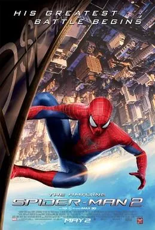

The genetics
Genetics is woven through the plot, in the comic-book style of the series. Peter's powers come from the bite of a genetically modified spider created at Oscorp; Electro is the result of an accident with genetically engineered eels; and Harry Osborn's transformation is triggered by an inherited fatal disease, which he tries to escape by injecting spider venom from the same research. Oscorp is a corporation whose biotechnology serves the Osborns' interests and possible military uses, and Peter's father is the conscientious scientist who refused to collaborate on "biogenetic weapons" and paid with his life. The film thus contrasts the ethical researcher with corporate genetic research driven by profit and power. The idea of inherited disease is real, but gaining powers or curing a hereditary illness by injecting another organism's blood or venom has no basis in biology.
How genetics is portrayed
- Overall portrayal of genetics
- negative Corporate genetic research driven by profit and weapons sets off every disaster in the film, from Electro to the Goblin and Gwen's death, and the ending is grief-stricken; Richard Parker's ethical refusal is a counterpoint seen mainly in flashback and a video, not the film's dominant picture.
- Outcome of the genetic intervention
- negative Oscorp's engineered eels turn Max Dillon into the destructive Electro, and the spider venom turns Harry into the Green Goblin, whose attack ends with Gwen's death; the weapons research also cost the Parkers their lives.
- Norman Osborn / Oscorp
- villain Aim: military, commercial (negative). Oscorp under Norman created genetically altered spiders and electric eels and wanted 'biogenetic weapons', a project that drove Richard Parker to flee and led to his death; Norman is villainous, sympathetic only in his concern for his son's inherited illness.
- Richard Parker
- hero Aim: benevolent, personal (positive). The Oscorp scientist used his own DNA in the spider research so it would only work for his bloodline, refused to help make biogenetic weapons and fled with his research; his hidden video presents him as the conscientious scientist who paid with his life.
- Harry Osborn
- villain Aim: personal (neutral). Facing the hereditary disease that killed his father, the new Oscorp head demands Spider-Man's blood and then has himself injected with the altered spiders' venom, which mutates him and degrades his sanity; as the Green Goblin he causes Gwen's death.
The story
Peter Parker's parents, Richard and Mary, are killed in a plane crash after Richard leaves Oscorp. Years later, Peter fights crime as Spider-Man while his relationship with Gwen Stacy falters. His childhood friend Harry Osborn returns to see his dying father, Norman, who tells him that his illness is genetic and that Harry will soon show symptoms. Max Dillon, an Oscorp engineer, falls into a tank of genetically engineered electric eels and becomes Electro, a being of pure electricity. As his symptoms appear, Harry concludes that Spider-Man's blood could cure him, but Peter refuses, fearing it could cause a dangerous mutation. Harry injects himself with venom from Oscorp's genetically altered spiders, which transforms him into the Green Goblin. Peter learns from his father's hidden video that Richard fled because he refused to help Norman develop biogenetic weapons. Peter defeats Electro, but Gwen dies in the fight with Harry.